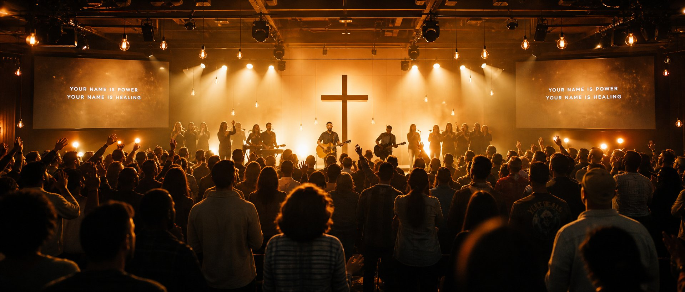
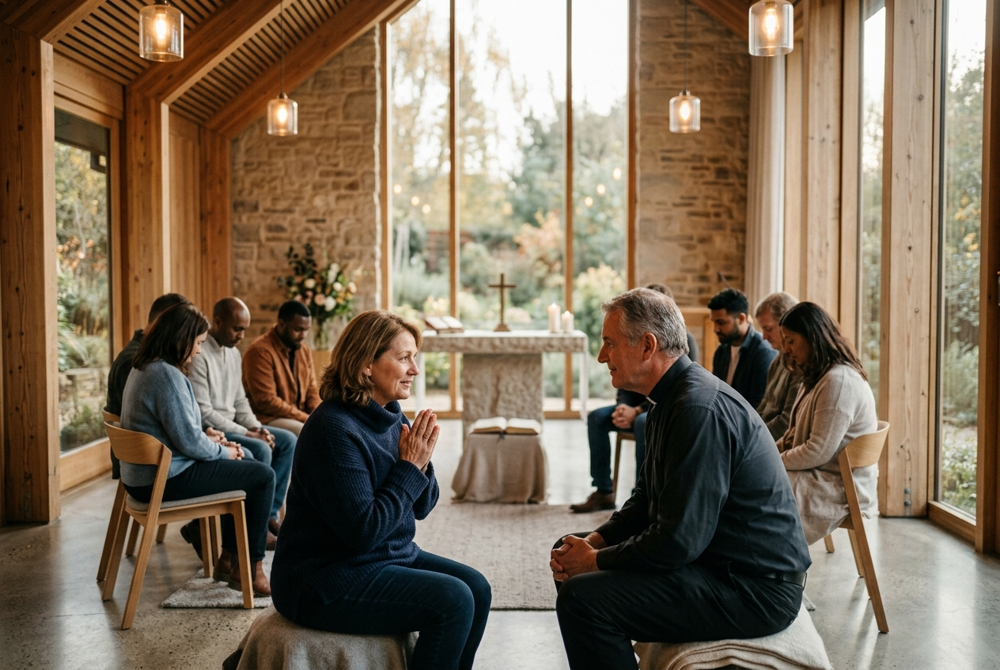

Find your place in the body of Yeshua. From child discipleship to apostolic outreach, every ministry is designed to ignite spiritual maturity and authentic community.
Instilling the foundational stories of the Scriptures, prayer habits, and love for Yeshua through engaging, scripture-rich classes in a joyful environment.

Young AdultsEquipping teenagers and young adults to stand boldly for righteousness in modern culture without apology or compromise, empowered by the Holy Spirit.

Mothers & DaughtersUnder the spiritual mothering of Evangelist Polycarp Comfort Amarachi, women gather to intercede for families, heal inner wounds, and flourish in holy purpose.
Taking the living Gospel beyond sanctuary walls. We bring food packages, clothes, hospital visitations, and open-air gospel proclamations to the forgotten.